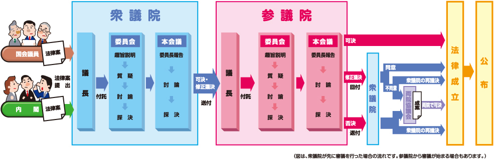

![]()
Ⅰ. 前回の振り返り（授業の感想）
1. 選挙制度と政治意識
- 内坂さん；髙尾さん
2. 『関心領域』
- 片山さん；角田さん；泉水さん；橋本さん
Ⅱ.日本の立法制度
1. 『公共』（東京書籍）
- （単元）国会の仕組みと役割
- 三権分立と国家の地位
- 国家の役割と権限
- 国家の構成と運営
いわゆる「55年体制」の時期には、衆参両院の結論が一致する場合が多かった。近年では別の結論が出る「ねじれ国会」という現象が一時見られ、「ねじれ」は慎重審議につながる面もあった。しかし、最近では与党が両院で多数を占め、国会でじゅうぶんな審議がなされない状態も見られるようになった。
国会では、本会議のほかに予算員会などの常任委員会や特別委員会で実質的な審議が行われ、そこでの議決をへて本会議に上程され、最終的に議決される。
政治思想のなかの代表論と代表制度論
⑴ マディソン
- アメリカ合衆国憲法の中心的な作成者
- 天使ではない人間がどう政府を運営するか
- 野望には、野望をもって対抗させなければならない
- 連邦政府と州政府による権力分割
- 三権の相互牽制と融合メカニズム
- 元老院（上院）と代表院（下院）
- 野望には、野望をもって対抗させなければならない
- ➡︎ 両院は選挙制度や運営方法など「できるだけ相互に関係がない」ようにしておく必要がある
⑵ バーク
- 議会は、互いに対立する様々な利害を代表する大使たちの集まりではない
- 議会とは、一つの国のただ一つの利害、すなわち全体の利害について話し合うための場
- 選挙区の利害を代表し伝えるための議員なのではなく、〔英国〕議会のための議員である 1
1 「議会は、互いに対立する様々な利害を代表する大使たちの集まり〔集まりに傍点〕ではありません。もしそうであれば、議員たちはそれぞれが代理人や弁護人として、自らの利害を言い張ることになるでしょう。ですが、議会とは、一つの国のただ一つの利害、すなわち全体の利害について話し合うための場なのです。ですから議会を導くべきは、地域それぞれの目的や偏見ではなく、国全体の理性から生まれる、社会全体にとっての利益なのです。あなたが選ぶのは、確かに一人の議員です。ですが、あなたが一旦その人を選んだのなら、その人はもはやブリストルの議員なのではなく、〔英国〕議会の議員なのです。もし地元の選挙民が地元に特有の利害をもったり、社会全体（Community）の人びとの本当の利益に明らかに反するような、軽率な意見を形成したりした場合、その地域から選ばれた議員は、他のどの議員と同じように、それを実現しようとするあらゆる試みに断固として関与すべきではありません」（ブリストル到着ならびに投票終了に際しての演説、1774）。
⑶ 代表制統治
- representative government
- 通常、代議制と訳されているが、representativeの意味を正確に訳した方がいい
- 「有権者に代わって、議論する」の意味ではない
- 国民代表：政治家（特に下院議員）
- 有権者ないし国民を「代表している」ことが、彼らの正当化の根拠
- 「代表できていない」ことが批判の論拠になる
- Cf. アメリカ連邦議会下院の正式名称
- United States House of Representatives
- 政治家は、誰の、何を代表しているのか
- 代表していなければ、正統性は損なわれる
- 近現代の政治制度においては「民主制」よりも大きな意味をもつ
- Cf. 政治や統治の正統性は、必ずしも「代表性」で担保されるわけわけではない
- 神の言葉を聞く能力；血統
1. 日本の立法制度：立法府と行政府
⑴ 国会（立法府）
- 憲法第41条：国会は「国権の最高機関」「国の唯一の立法機関」
- 予算の決定；立法活動
- 会期：通常国会（1月から6月）；臨時国会（秋）；特別国会（総選挙後）
- 会期外は予算決定、立法活動ができない
- Cf. 閉会中審査（国会法52条）：緊急性の高い問題について審査を行う（例：コロナ、災害、防衛省不祥事問題）
⑵ 議院内閣制（行政府）
- 国会で多数を占める政党もしくは政党の連合（院内会派）が、内閣を組織し、行政権力を執行
- 行政権力は憲法と法令の範囲内に限られる
- 法令の裏付けのない行政権力は違法行為
⑶ 臨時国会の招集要求
内閣は、国会の臨時会の召集を決定することができる。いづれかの議院の総議員の四分の一以上の要求があれば、内閣は、その召集を決定しなければならない（憲法第53条）。
- ➡ 憲法は野党も臨時国会の開催を要求できる（実現できる）ことを保証
- ➡ 憲法は内閣と異なる、少数意見を立法府に反映させることを要請
- Cf. 「（記者解説）臨時国会召集「内閣の義務」 裁量権、歯止めかけぬ「憲法の番人」（朝日新聞、2023年10月9日）2
2 「いつ召集するのかは、内閣に広い裁量権があるというのが政府の立場だ。１７年９月、当時の菅義偉官房長官は会見で、「いつ召集しなければならないというような期日について（憲法上の）規定はない。合理的な期間の中で召集をした」と述べている」。「注目したいのは、裁判官５人のうちの１人の反対（少数）意見だ。行政法学者出身の宇賀克也裁判官は、多数意見があまり触れなかった５３条の詳しい意味を、論理的にわかりやすく語っている」。「提訴から５年余。結論は原告敗訴だったが、裁判を通じて５３条の重要性が改めて認識された。死文化しかけた憲法５３条後段に息を吹き込む作業だった。私たちの「不断の努力」がないと、憲法はただの紙切れになりかねない。少数派の尊重という民主主義の土台を損ねる政治を許していいのか。選挙や最高裁裁判官の国民審査の権利がある、私たちも問われている」。
2. 日本の立法制度：会議体
⑴ 会議体
- 本会議
- 委員会（常設委員会（予算委員会もここに含まれる）；特別委員会）
- 党首討論
- 国家基本政策委員会（参両院の合同審査会）
- 討論時間：（全野党で）45分（と短い）
- ➡ 野党は予算委員会を優先
- ➡ 党首討論の形骸化
- 妥協とcompromise
- com（＝共に）＋ promise（＝約束する）（共に責任を引き受ける「合意」）
〔「妥」は穏やかの意〕両方の意見が対立している場合、互いに折れ合って穏やかに話をまとめること。〔広義では、相手の権力などに屈して、いいかげんなところで自分の主張をごまかすことを指す〕（『新明解国語辞典』）
an agreement made between two people or groups in which each side gives up some of the things they want so that both sides are happy at the end (Oxford Advanced Learner’s Dictionary)
⑵ 事前通告
委員会審議における事前質問通告
- 正確な答弁を行うための制度
- 官僚が答弁書を作り、答弁者（普通は大臣）が読み上げる
- Cf. 記者クラブ（内閣記者会）主催の首相記者会見も、事前に記者から質問どりをして、官邸が事前に回答を用意
- Cf. イギリス：首相答弁は党職員が作成（若手スタッフの登竜門）
野党の質問通告が遅いという問題について
「2日前まで」なのか、「速やかな質問通告」なのか。本質的にはどちらでも良く、政治家がきちんと答弁できるかどうかが大切でしょう（池本大輔・イギリス政治）「質問通告なしの国会論戦、英国ができるワケは」（朝日新聞、2025年11月18日）。
⑶ 委員長の裁量権
- 野党の予算委員長：安住議員の場合
- テレ東BIZ ダイジェスト「“安住流” 異例尽くしの予算委 30年ぶりに野党から就任した予算委員長が辿った歴史的な国会の一日までの道程」（via YouTube）
- 日本の政治探検部【国会切抜】「【神采配まとめ】安住予算委員長の名場面集 ヤジも時間超過も即刻鎮圧する神采配をイッキ見」（via YouTube）
- 与党の予算委員長：棚橋議員の場合
- 衆議院インターネット審議中継「予算の実施状況に関する件（国政全般について）・今井雅人議員」（2019年11月6日 (水)）3:34:10）
- 衆議院インターネット審議中継「令和元年度一般会計補正予算（第１号）・大串博志議員」（2020年1月27日 (月)）5:47:53）
⑷ 会期制と会期不継続の原則
- 国会を一定期間の「会期」に区切って運営する制度
- 会期中に議決に至らなかった議案は次の会期に継続しない
- ただし、議院の議決により継続審議とすることは可能
- 海外は、会期があっても（session）、議案が自動継続する制度を採っている
- Cf. 衆議院が解散された場合、継続審議となった法案はすべて廃案となる
- 公立小学校の給食費の無償化
- 万博未払いの救済案
- 障害児福祉手当の所得制限撤廃法案
⑸ 党首討論
- UK Parliament
- 日本 衆議院
- The PAGE「【国会中継】高市首相、就任初の党首討論 野党代表と論戦（2025年11月26日）」
3. 日本の立法制度：法律制定の流れ
 - 出典：参議院キッズページ「法律ができるまで」
4. 日本の立法制度：委員会
⑴ 常設委員会
⑵ 特別委員会
- 常任委員会の所管に属さない案件の審査・調査
- 実際には、常設委員会の所管が重なり、一つの委員会で集中的に審査した方がいい案件（会期ごとに設置）
5. 日本の立法制度：二院制
⑴ 二院制：衆議院と参議院
- 異なる権限
- 権力の相互抑制
- 衆議院の優越
- 衆議院にのみ認めれた権限：内閣不信任の決議；予算先議権
- 衆議院議決の優先：内閣総理大臣の指名；予算；条約
- 法律案の再議決：出席議員の2/3以上の賛成（より一般的な民意を反映させるため）
- 異なる選挙制度
- ➡ 異なる民意の反映
- 衆議院：小選挙区（定数1）＋比例区（地域ブロック）
- 参議院：選挙区（定数は都道府県によって異なる）＋比例区（全国）
- ただし、自覚的に衆参それぞれの選挙制度を設計したわけではなく、また、衆議院と参議院がどのような役割を負うべきかについての議論は停滞
- 「二院制と参議院の在り方に関する小委員会調査報告書（平成17年3月）」
- 参議院改革協議会
- 定期的に浮上する参議院不要論
- ➡ 異なる民意の反映
- Cf. 政治思想史における両議会の役割についての議論
- ジェームズ・ハリントン（17世紀イギリスの政治家／政論家）
- 2人の少女のケーキの切り分け
「一人の少女は相手に「お切りなさい、わたくしが選ぶから」あるいは「切らせて下さい、あなたに選ばせてあげるから」というであろう」（ハリントン（犬塚元訳））3
- ジェームズ・ハリントン（17世紀イギリスの政治家／政論家）
3 ‘Divide,’ says one to the other, ‘and I will choose, or let me divide, and you shall choose.’ (原文)
⑵ ねじれ国会
- ねじれ国会：衆参で与野党が逆転した状態
- 一般的に参議院で野党多数の状態を指す
- 2007年と2010年の衆参ねじれによる内閣の弱体化
- 第1次安倍内閣から民主党野田内閣までの6政権が約1年で交代した主因
- ➡ 決められない政治
- ➡ 参議院不要論
6.日本の立法制度：参議院
⑴ リーディングアサインメント
- セイジドウラク「澤田記者が参議院を好きすぎる件」
- 内坂さん; 梅田さん; 亀崎さん; 小松原さん; 長谷川さん
⑵ 特徴
- 議員の専門化：解散なし；長い任期；少人数
- 豊富な委員会経験を積み上げることができる
- 全国区での当選：業界団体の支援
- 日本医師会：自民党
- 日本教職員組合：立憲民主党
- 質疑：片道方式（持ち時間を質問時間でカウント）
- Cf. 往復方式（持ち時間を質疑応答時間でカウント）
Ⅲ. 55年体制とネオ55年体制
1. 55年体制
⑴ 55年体制の政治
- イデオロギー対立の時代
- アメリカかソ連か
- 安保か反安保か
- 一党優位政党制
- 与党第1党（連立の場合あり）が1/2を確保
- ➡ 円滑な政権運営が可能
- 野党第1党ほかで1/3を維持
- ➡ 憲法改正を阻止
- 与党第1党（連立の場合あり）が1/2を確保
⑵ 形骸化する国会審議
i. 与党事前審査
- 予算、法案の原案、各省庁が作成
- 自民党政務調査会各部会（完全非公開）
- 国会ではなく、与党内で法案審議、修正
- ➡ 与党が事前審査したものを内閣提出法案（閣法）として提出
- ➡ 委員会；本会議の空洞化
ii. 国会審議
- 議会審議のなかで予算、法案が修正されない45
- 新型コロナウイルス（2月13日に国内で初の死者が発生）、能登半島地震（1月1日発災）に際しても、野党の予算組み換え動議に応じず
- 近年、予備費で対応することが常態化（憲法83条・85条が求める民主的かつ透明性あるな財政運営に反する）。会計検査院が批判（「国会からの検査要請事項に関する報告（検査要請）」）
- 2025年度本予算審議は例外（「特集 令和7年度 予算の国会修正について」（財務省広報誌『ファイナンス』令和7年5月号））6
- 新型コロナウイルス（2月13日に国内で初の死者が発生）、能登半島地震（1月1日発災）に際しても、野党の予算組み換え動議に応じず
- 修正プロセスは与野党協議が中心
- 内閣提出法案に関する憲法規定なし
- 国会法により、内閣は国会審議に主体的に参加できず
- ➡ 内閣が国会の議論を取り入れて、法案を自ら修正することが制度化されていない
- ➡ 不透明な審議プロセス
- ➡ 野党の修正は法案ではなく付帯決議で終わることが多い
- 例：障害者情報アクセシビリティ・コミュニケーション施策推進法
- 立憲民主党による付帯決議：「手話言語法の立法を含め、手話に関する施策の一層の充実の検討を進めること」など（リンク）
- 例：障害者情報アクセシビリティ・コミュニケーション施策推進法
- 内閣提出法案に関する憲法規定なし
4 「日本の内閣は矢面に立つことをせず（正確には、矢面に立つことができず）、国会審議の進行を与党に委ねてきた。そして、自民党政権下では、与党主導による法案成立を確実なものにするために、事前審査という便法が編み出されたのだった。〔民主党による〕政権交代後、事前審査は廃止されたが内閣の側に国会審議に介入する手段のないことは従来と同じで、結局は何らかのかたちで与党に頼るか、逆に与党議員の自由な行動を力で抑えつけるか、どちらかでなければ内閣法案の成立は覚束ない。とすれば、最も重要な改革は、内閣にある程度、国会審議への関与を認め、内閣を矢面に立たせることではなかろうか」（大山礼子 (2011), p.145）｡
5 「与党による法案の事前審査制度がある中、野党は法案をほぼ修正できないのが現状です。（原文改行）そうなると、通常国会であれば150日という限られた日程の中で、どうしても日程闘争に力を注ぐことになり、審議は軽んじられ、通告通りの型にはまった答弁で形骸化していきます。少数与党の状況下、質問通告をめぐる今回の問題を通じ、国会審議のあり方そのものを深く議論する契機とすべきでしょう」（質問通告なしの国会論戦、英国ができるワケは（朝日新聞、2025年11月18日））。
6 「再イデオロギー化」した政治状況では、憲法問題や防衛政策での意見の集約が各党に求められる。このことが野党の大同団結を難しくしているのである（境家史郎 (2023), p.286）。
2. 「改革の時代」とネオ55年体制
⑴「改革の時代」：1990年代
- 選挙制度改革; 行政改革; 地方分権改革
- ➡ 各党が「改革政党」を目指して論戦
- ➡ イデオロギー問題が焦点化せず
⑵「改革の時代」の終わり：2000年代
- 再びイデオロギー対立の時代へ
- 国家イメージをめぐる争い
- 「日本を取り戻す」
- 憲法改正問題の浮上
- 野党（第一野党を中心に）：議席数1/3を死守することが目標に
- 野党：憲法問題で意見集約できず（分断統治）
- 国家イメージをめぐる争い
⑶ ネオ55年体制と憲法問題
- 第2次安倍政権と立憲民主党の対立
- 集団的自衛権と憲法問題に端を発する政治の「再イデオロギー化」
- 競合する野党：立憲民主党と日本共産党 vs. 日本維新の会と国民民主党 7
7 「再イデオロギー化」した政治状況では、憲法問題や防衛政策での意見の集約が各党に求められる。このことが野党の大同団結を難しくしているのである（境家史郎 (2023), p.286）。
歴史を紐解けば明らかなように、この構造は、日本の戦後政治に憲法問題がビルトインされていることに由来する。1950年代に憲法9条と現実の防衛政策の整合性が問われて以来、今日までエリートレベルではこの問題をめぐって論争が続いており、その亀裂は、大政党有利の小選挙区制下でさえ政党を分立させるほどに深い。そして野党の結集が妨げられたことで、自民党は漁夫の利を得、政権の座にあり続けてきたのである。その意味では、9条の存在こそが、逆説的にも、改憲を党是としてきた自民党の優位を支えてきたという言い方もできよう（境家史郎 (2023), p.291）。
⑷ 高市一強政権と中道改革連合の誕生：二つのシナリオ
- 高市一強政権と野党冬の時代再来
- 与党多数により、小政党はキャスティング・ボートを握ることできずに埋没（消滅）
- 第1野党は与党との相違点を強調するために「護憲論」を強いられる（レフトシフト）中道改革連合の崩壊？
- ➡︎ ネオ55年体制の継続
- 与野党拮抗状態の継続
- 「中道」の再定義により、憲法改正を前提とする第1野党誕生？
- 「護憲／改憲」という二分法を超え、改憲を前提に、内容で争う第一野党となるか？
- ➡︎ ネオ55年体制の終焉、新しい政治体制の到来？